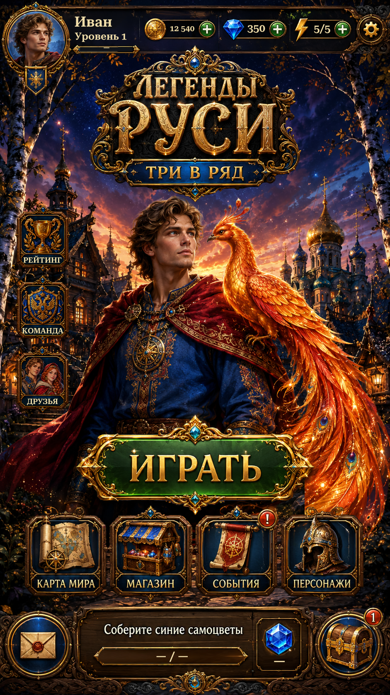

Darker Ranking, Team and Friends artwork with native-scale navigation captions. Existing Map/Shop artwork is unchanged. Use the Before R6 views to compare. Earlier R6 captures also had stale shortcut-label resolution; the R7 capture refresh now includes every label.
| Icon | Route |
|---|---|
| Trophy · Ranking | Home → Individual Ranking |
| Eagle · Team | Home → Team Hub → Team Ranking / Team Chat |
| Paired portraits · Friends | Home → Friends List |
Actual Unity Play Mode captures with isolated saves and simulated phone sizes/safe areas. Russian and English labels are live. Social pages retain their current preview/data limitations.
